3D Printing for "Dummies"
How to get started with our 3D printer
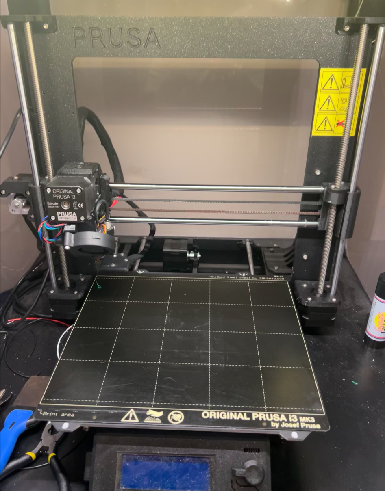Overview of the 3D printing workflow
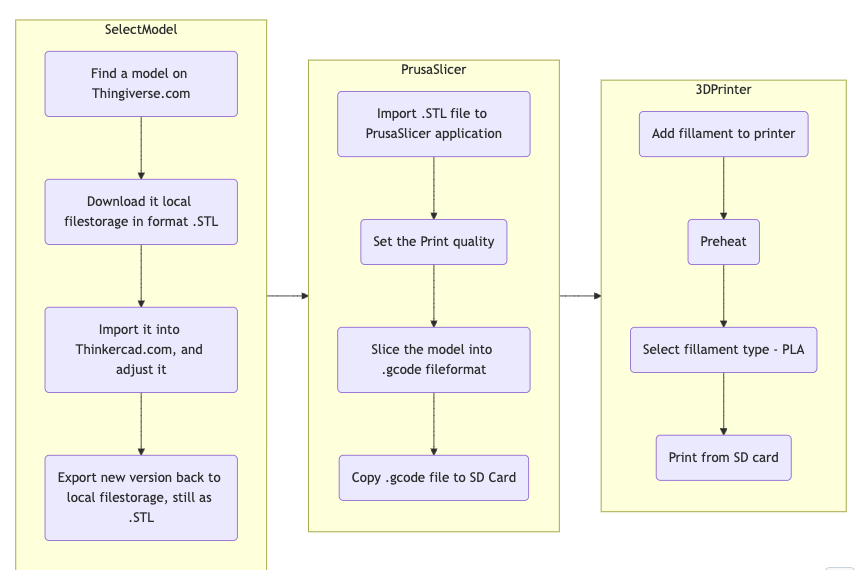Finding a 3D model on the internet
Thingiverse.comFind a model and download it
Fileformat: .STL
Adjust or create a 3D model
Thinkercad.com 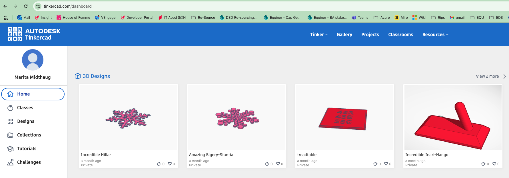Click the "Create button"
- Import the STL models found on Thingiverse
- Downscale it, if necessary
- Adjust it if you want
- Export is as STL
PruzaSlicer software
- Download and install locally
- Import .STL file
PruzaSlicer local config
Set the desired print quality
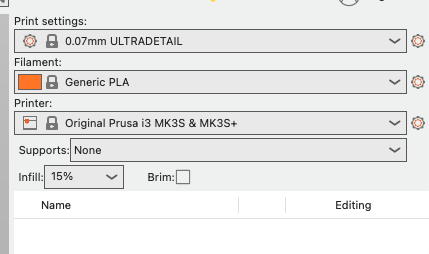- Print settings: - how finegraned/thick each print level will be
- Fillament: most likely you use PLA
- Printer: Orginal Prusa i3 MK3S & MK3S+
- Infil:How much of the inside of model to be infilled
Export the file to .gcode
copy it to the SD card
Preparing the 3D printer
Steps Preheat
Check temperature
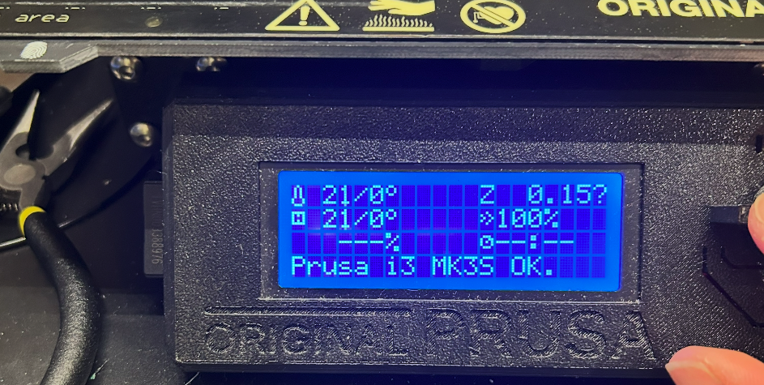
Preheat if necessary
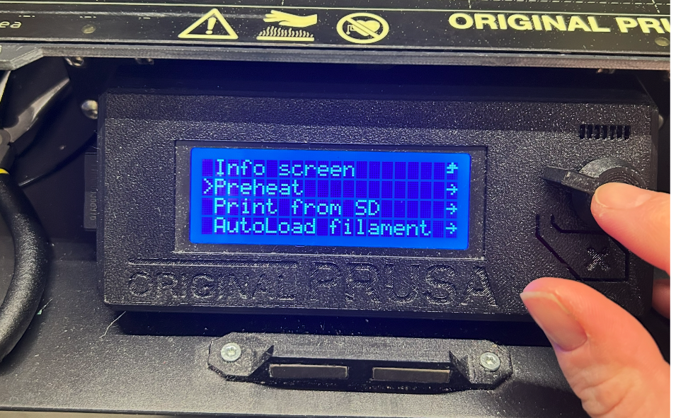
Choose type of fillament - PLA

Wait for the temperature
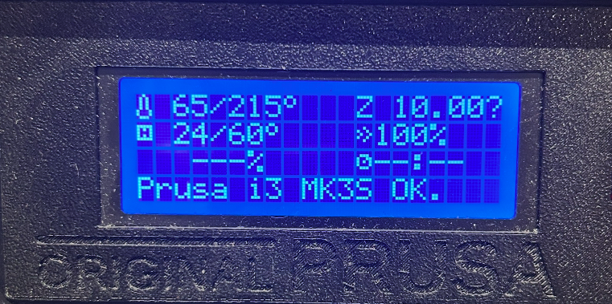
Load fillament and print
Steps
Cut the end of the fillament
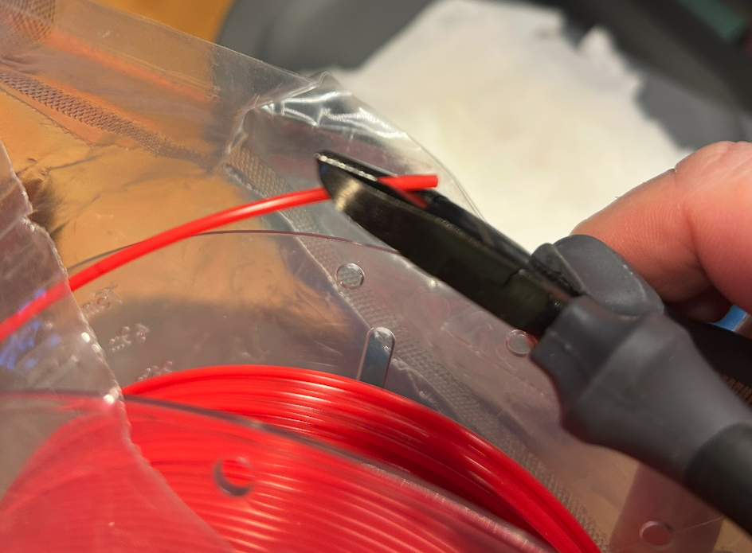
Select "Autoload fillament"
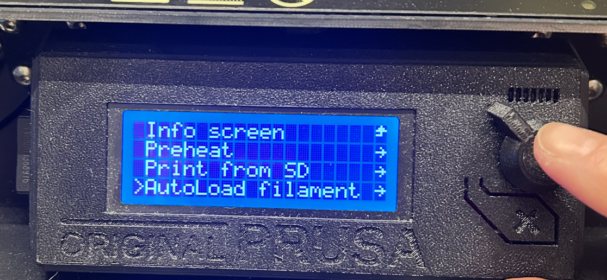
Choose type of fillament - PLA
Push fillament down into head node.
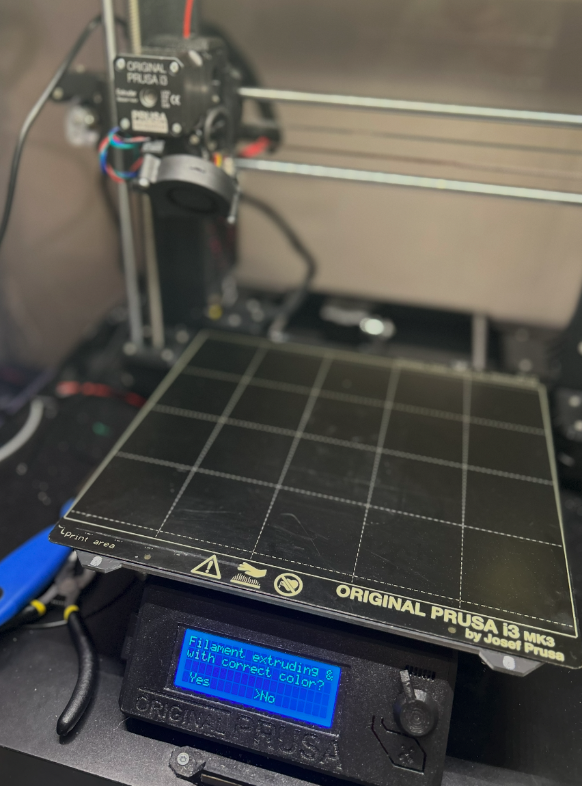
When fillament appears, click yes.
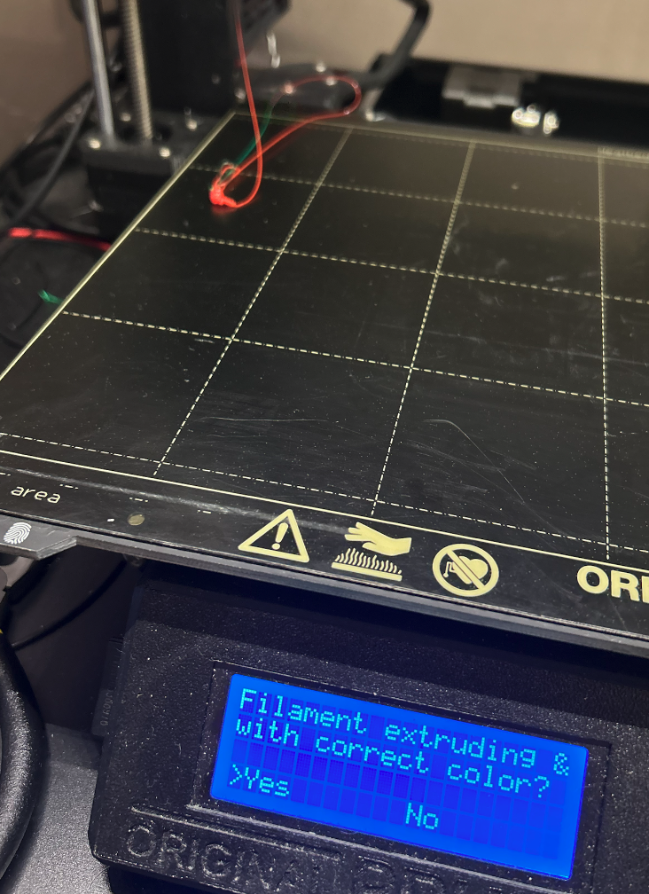
Navigate to "Print from SD card", and select file to print.
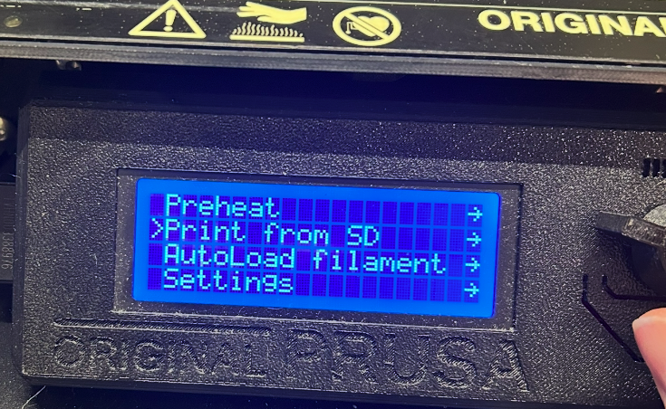
At the 3D prointer - good practices
- Make sure the print board is clean, use wiper if not
- Don´t put your fingers on the print board, fingerprints will prevent the filler to stick properly
- Use the "metallskrape" when removing the finished 3D print from the board
- When finished, remove the fillament and put it back to the plastic bag. It needs protetction from "fukt"
- Turn of the 3D printer power, remove excess fillament and garbage from the printer area and all equipment in a state that will work for the next one"
IF stuck - whome to ask....
Thank you for your attention
Marita Midthaug
Lead analyst IT
Equinor